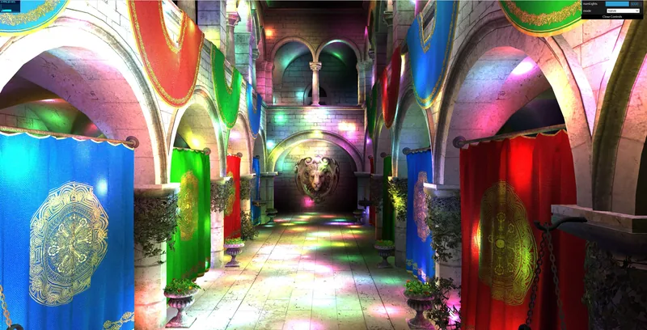
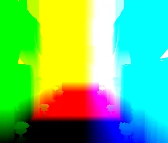
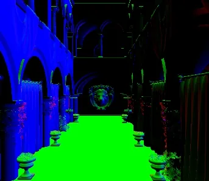
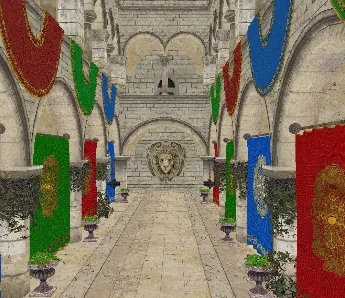
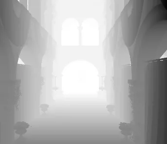
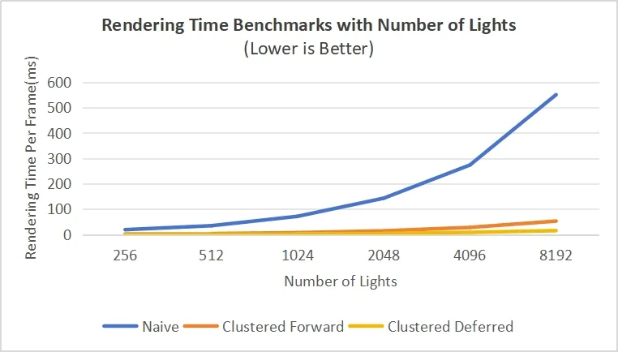

← All works

WebGPU Forward+ and Clustered Deferred Shading
Three ways to light the Sponza atrium with thousands of moving point lights, in the browser: naive forward, Forward+ and clustered deferred shading, compared at 4K.
- Year
- 2024
- Type
- Individual project
- Tested on
- RTX 4090, i7-13700K, Windows 11
- 3 → 100+ fps5,000 lights at 4K, naive forward against clustered deferred
- 550.8 → 15.1 msper frame at 8,192 lights
- 0.5 msper frame at 256 lights with clustered deferred
Overview
The project compares the three shading methods at high resolution with thousands of lights:
- Three pipelinesForward, clustered forward (Forward+) and clustered deferred
- Light clusteringA compute shader splits the view frustum into clusters, logarithmically along depth, and assigns lights to them
- BloomOptional post-process
- G-bufferCompressed layout
The live demo needs a browser with WebGPU.
-

Sponza at 4K with 5,000 lights

-
Random lights moving through the scene
G-buffer
-

Position -

Normal -

Colour -

Depth


Frame time at 4K
| Lights | Naive | Clustered forward | Clustered deferred |
|---|---|---|---|
| 256 | 18.8 ms | 1.6 ms | 0.5 ms |
| 512 | 34.4 ms | 3.4 ms | 1.1 ms |
| 1,024 | 71.4 ms | 7.0 ms | 2.3 ms |
| 2,048 | 142.8 ms | 14.2 ms | 4.1 ms |
| 4,096 | 273.6 ms | 27.7 ms | 8.2 ms |
| 8,192 | 550.8 ms | 52.6 ms | 15.1 ms |
-

Frame time by number of lights